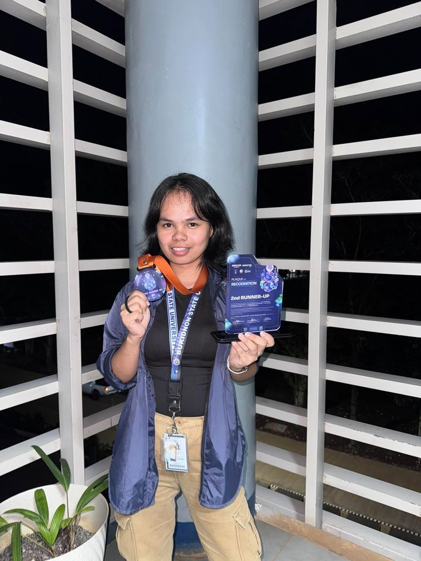

Hello, I'm Danica.
I design and build
digital solutions.
BS Information Technology Student
UI/UX · Development · QA · Project Management
Featured project
01Selected work
02 — 03Other projects
04 — 05What I bring
SkillsDesign & Research
- UI/UX Design
- Research
Build
- Web Development
- Mobile Application Development
Quality & Delivery
- QA / Testing
- System Analysis
- Documentation
- Project Management
Communication
- Presentation / Pitching
- Team Collaboration
Networking
- IP Addressing & Subnetting
- VLAN Configuration
- Static & Default Routing
- Cisco Packet Tracer
Tools & tech from my coursework
Certificates of completion: Cisco Networking Academy (Switching, Routing, Wireless Essentials) · CHED ACHIEVE (Intro to AI Literacy)
These are areas I've practiced through academic and professional projects.
About
Danica M. Pahanggin
4th Year BSIT Student · Bukidnon State University
I'm a BSIT student who enjoys turning everyday problems into practical digital tools. My academic projects have let me work across interface design, web and mobile development, and software testing, and I'm especially interested in how good design and careful QA make a system easier to trust and use.
Expected graduation: 2027
Contact